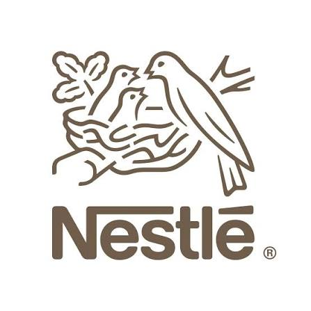
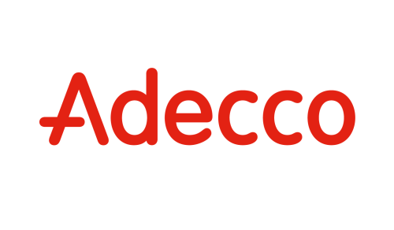
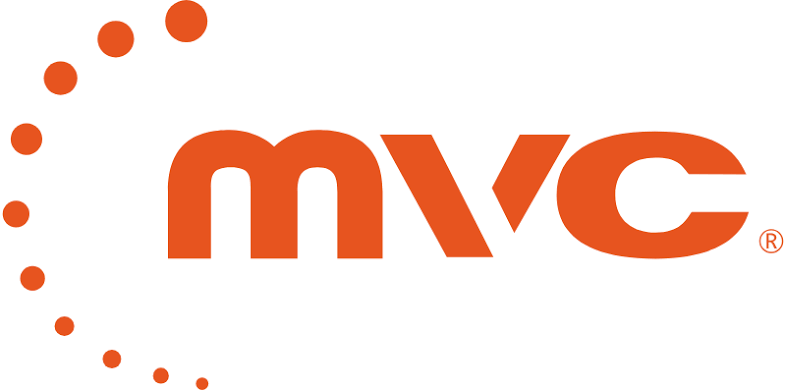
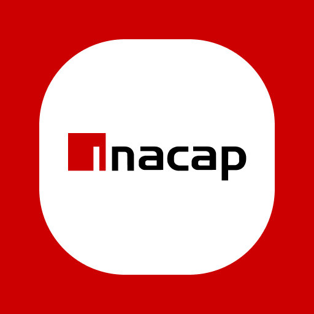

Ingeniera en Informática orientada al análisis de datos, desarrollo tecnológico y creación de soluciones digitales.
Ingeniera en Informática enfocada en análisis de datos. En mi experiencia laboral en entornos industriales realicé registro, validación y control de calidad de datos operacionales en Excel, asegurando la trazabilidad y confiabilidad de la información.
He complementado esa base con formación y proyectos propios en Power BI, Tableau y SQL, además de conocimientos en Python, Java, JavaScript y React. Busco desarrollarme profesionalmente como Analista de Datos, aportando rigurosidad, orientación al detalle y capacidad de aprendizaje continuo.
Líder

Nestlé

CIO | Adecco
Control de Secado de Nueces | Anakena
Ingeniería Informática | Adecco
Diseñé e implementé 4 planillas de control en Excel (tablas dinámicas, validación de datos y KPIs) usadas por los 4 turnos de planta — una de ellas permitió un seguimiento más frecuente del floculante y detección temprana de desviaciones.

Minera Valle Central | Adecco
Análisis de muestras de molibdeno y agua, registro y validación de resultados en Excel para reportes operacionales usados por el equipo de químicos en la toma de decisiones.

Titulación profesional | INACAP
Herramientas y tecnologías que utilizo para analizar datos, desarrollar soluciones y crear experiencias digitales.
Busco desarrollarme como Analista de Datos Junior o Desarrolladora Junior, aplicando conocimientos en análisis de información, programación y tecnologías web para contribuir a la optimización de procesos y la generación de soluciones tecnológicas.
Me motiva el aprendizaje continuo, la resolución de problemas y el uso de la tecnología como herramienta de mejora e innovación.
2026 | Centricity y Experiencia de Cliente
2025 | Tableau - Excel
2024 | Power BI
2023 | Scrum Essentials
2023 | JavaScript - CSS